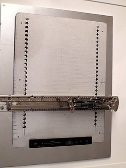

This article is about the writing system. For the person who created braille, see Louis Braille. For other uses, see Braille (disambiguation).
Braille (/ˈbreɪl/ BRAYL, French: [bʁaj]) 🔊 is a tactile writing system used by blind or visually impaired people. It can be read either on embossed paper or by using refreshable braille displays that connect to computers and smartphone devices. Braille can be written using a slate and stylus, a braille writer, an electronic braille notetaker or with the use of a computer connected to a braille embosser. For blind readers, braille is an independent writing system, rather than a code of printed orthography.
Braille is named after its creator, Louis Braille, a Frenchman who lost his sight as a result of a childhood accident. In 1824, at the age of fifteen, he developed the braille code based on the French alphabet as an improvement on night writing. He published his system, which subsequently included musical notation, in 1829. The second revision, published in 1837, was the first binary form of writing developed in the modern era.
Braille characters are formed using a combination of six raised dots arranged in a 3 × 2 matrix, called the braille cell. The number and arrangement of these dots distinguishes one character from another. Since the various braille alphabets originated as transcription codes for printed writing, the mappings vary from language to language.
History
The writing system was developed by Louis Braille in nineteenth-century France. It was based on a tactile military code called night writing, developed by Charles Barbier in response to Napoleon's demand for a means for soldiers to communicate silently at night.
Braille's system gained acceptance throughout the French-speaking world, and later spread internationally. It has become a universal method of written communication for people who are blind or visually impaired.
Form
Braille is not a language. Rather, it is a code that can be used to write many languages, such as English, French, Spanish, Chinese and dozens of others. There are also braille codes for mathematics, music and computer notation.
Writing braille
Eight-dot braille [ edit ]
Braille has been extended to an 8-dot code, particularly for use with braille embossers and refreshable braille displays. In 8-dot braille the additional dots are added at the bottom of the cell, giving a matrix 4 dots high by 2 dots wide.
Letters are represented by patterns of raised dots. The first 25 braille letters transcribe a–z, skipping w. In English Braille, the rest of that decade is rounded out with ligatures.
Formatting [ edit ]
Various formatting marks affect the values of the letters that follow them. They have no direct equivalent in print. The most important in English Braille are:
follows
follows
That is, ⠠ is read as capital 'A', and ⠼ as the digit '1'.
Punctuation [ edit ]
Basic punctuation marks in English Braille include:
(period)
⠦ is both the question mark and the opening quotation mark. Its reading depends on whether it occurs before a word or after.
Punctuation varies from language to language. For example, French Braille uses different marks for its question mark and swaps quotation marks and parentheses.
Contractions [ edit ]
For a full list of abbreviations and contractions in English, see English Braille & Contractions. Contracted braille uses single characters or groups of characters to represent common words and letter combinations.
Page dimensions [ edit ]
Most braille embossers support between 34 and 40 cells per line, and 25 lines per page.
A manually operated Perkins braille typewriter supports a maximum of 42 cells per line, and typical paper allows 25 lines per page.
A large interlining Stainsby has 36 cells per line and 18 lines per page.
Braille writing machine [ edit ]

A Braille writing machine is a typewriter with six keys that allows the user to write braille on a regular hard copy page.
The first Braille typewriter to gain general acceptance was invented by Frank Haven Hall and was presented to the public in 1892.
The Stainsby Brailler, developed by Henry Stainsby in 1903, is a mechanical writer with a sliding carriage that moves over an aluminium plate as it embosses Braille characters.
In 1951 David Abraham, a woodworking teacher at the Perkins School for the Blind, produced a more advanced Braille typewriter, the Perkins Brailler.
Braille reading
Braille is read by moving the fingertips across raised dots. Reading is generally performed with one or both index fingers, and experienced readers can achieve considerable speed.
Literacy
Access to braille is important for literacy, education and employment. Modern refreshable displays allow braille readers to use computers and mobile devices.
Braille transcription
Transcription converts printed material into braille using specialized rules and software.
Braille translation software
Computer software translates text into the appropriate braille code for a particular language and context.
Braille reading techniques
Readers commonly use the index finger of the dominant hand while the other hand locates the next line.
International uniformity
International standards help braille users read material in many languages and countries.
Other braille conventions
Special conventions exist for mathematics, music, science, programming and technical notation.
Uses
Braille is used in books, signage, elevators, packaging, public transportation and digital displays.
Unicode
Braille patterns are encoded in Unicode, allowing them to be represented digitally.
Observation
Raised-dot systems remain useful wherever tactile access is needed.
Braille devices
Devices include slate and stylus tools, embossers, notetakers, and refreshable braille displays.
See also
Louis Braille · Tactile writing systems
Notes
References and notes accompany the historical and technical claims in this article.
References
Selected references are listed below.